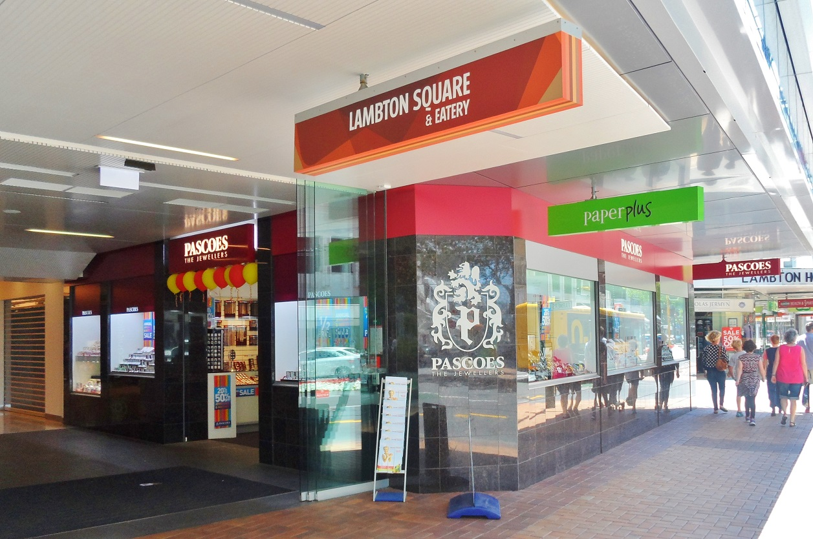
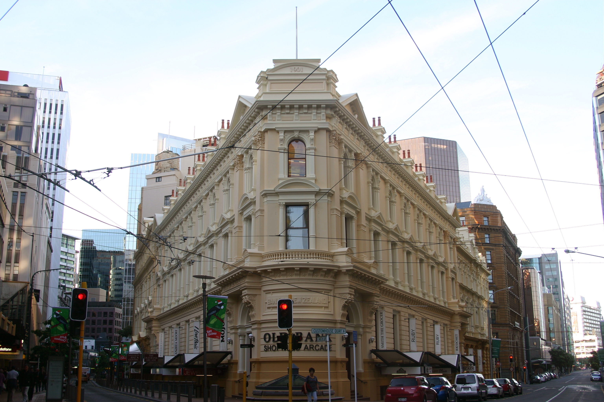

Some of the shopping malls in Wellington include Old Bank Arcade and Queensgate.
Old Bank Arcade is a retail complex on a corner site at Lambton Quay in Wellington.
The property consists of four beautiful buildings built between 1883 and 1904.
As well as a great place to grab a cofee there is also jewelry shops, clothing and beauty stores
With 140 shops theres something for everyone at Queensgate.
The centre first opened in 1986, and underwent redevelopment that was completed in August 2006.
 